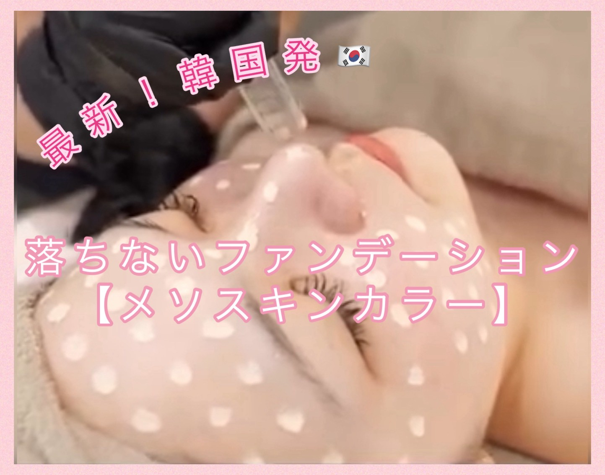

メソスキンカラー ￥19,800

メソスキンカラー — ファンデーションいらずの“ツヤ肌革命”
メソスキンカラーとは 美容液98%＋カラー2%で構成された高濃度カラーセラムを、マイクロニードル（エステ版ダーマペン）で肌の奥まで導入する最新美肌トリートメントです。
韓国で人気に火がつき、日本でもSNSを中心に話題に。ファンデーションを「塗る」から「入れる」時代へ。従来の「隠す」ケアではなく、肌そのものを整え素肌を美しく輝かせることを目的としています。すっぴんでも自信が持てる、ナチュラルでツヤのある美肌を叶えます。
メソスキンカラーの効果・メリット
- 🌸 肌トーンを均一にし、くすみ・色ムラを軽減
- 💧 内側から透明感・うるおいを引き出す
- 💎 小ジワ・毛穴・色素沈着・クマの改善サポート
- 🌿 すっぴんでもファンデーションを塗ったような均一肌
- ⚡ 継続ケアでハリ・弾力・キメが整う
※ カラーセラムにはリジュラン、ペプチド、CICA、ヒアルロン酸など高保湿成分が含まれ、再生・鎮静・保湿を同時に叶えます。
こんな方におすすめ
- メイク時間を短縮したい方
- ファンデーションに頼らず自然な美肌を目指したい方
- くすみ・毛穴・シミが気になる方
- スポーツや温泉などすっぴんで過ごす時間が多い方
- 敏感肌でも刺激を抑えてケアしたい方
施術の流れ
- クレンジング — お肌を優しく洗浄し整えます
- Meso PEEL — 角質除去で浸透力アップ
- 選べる美容液導入 — マイクロダーマで肌の奥へ美容液を浸透
- Meso Color Foundation — カラーセラムを丁寧に浸透
- パック＆仕上げ — 美容液＋パック＋LEDで鎮静＆保湿
ダウンタイムはほとんどなく、施術直後からツヤやハリを実感できます。翌朝はまるで“すっぴんキレイな人のような透明感”を感じられます。
選べる美容液（例）
- PDRN（リジュラン） — お肌の再生や土台から立て直したい方に大人気
- Aqua — 美白・小ジワ対策、うるおい重視の方に
- STEM CELL — ハリ・弾力・アンチエイジングに
- AHA&BHA — 毛穴つまり・ニキビケアに
よくあるご質問（Q&A）
- Q1. 痛みはありますか？
- → 髪の毛より細いマイクロニードルを使用するため、ほとんど痛みは感じません。
- Q2. どのくらい持続しますか？
- → 1回でも効果を実感できますが、約1週間〜10日おきに4回続けることで定着しやすくなります。
- Q3. ダウンタイムはありますか？
- → ほぼありません。
- Q4. 使用するカラーは安全ですか？
- → 日本製・認可済みの商材を使用しており、安心して施術を受けていただけます。
当サロンのこだわりと安全性
認可済みマシンと日本製のカラーセラムを使用し、徹底した衛生管理のもとで施術を行います。肌質に合わせた美容液をカスタマイズし、初めての方にも安心のカウンセリングを実施します。
施術後のアフターケア
- 施術後24時間は洗顔やメイクを避け、顔を濡らさないでください（プールは1週間不可）
- 施術後3日間は酸性成分入りスキンケアを避けてください
- レチノール・ビタミンC・AHA・BHAなどの刺激成分は施術後1週間控えてください
- 保湿とUVケアは徹底（SPF30以上）
- 48時間以内のサウナ・高温刺激・香料付き化粧品の使用は控えてください
事前に同意書のご確認をお願いしております。下記の画像をご確認ください。